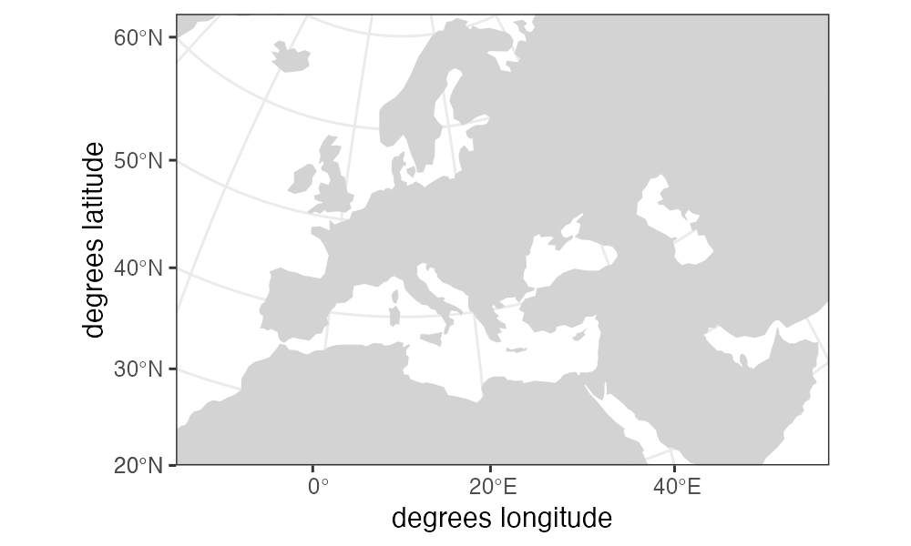
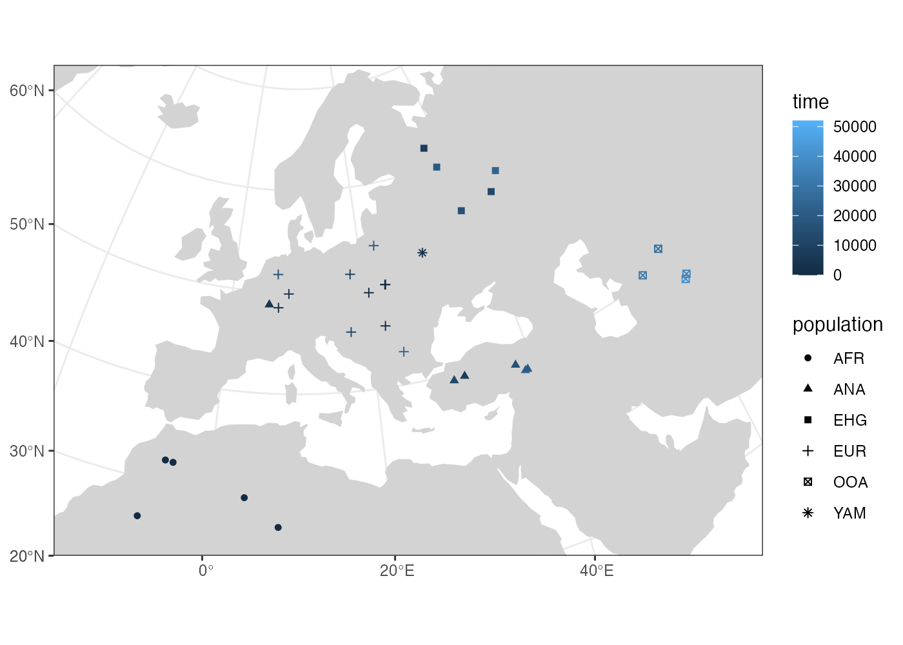
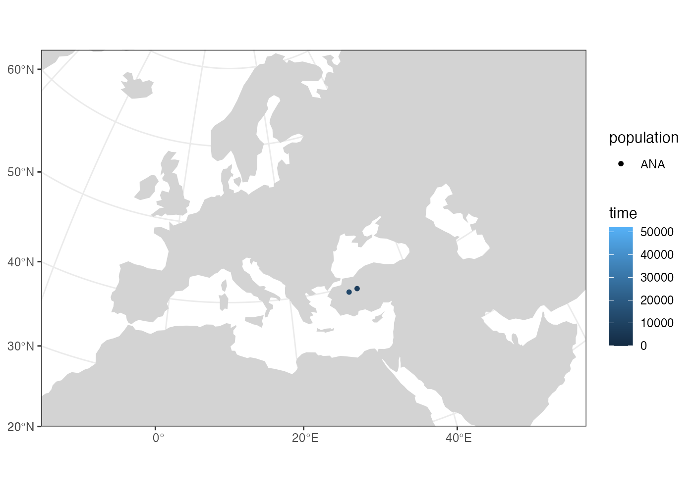
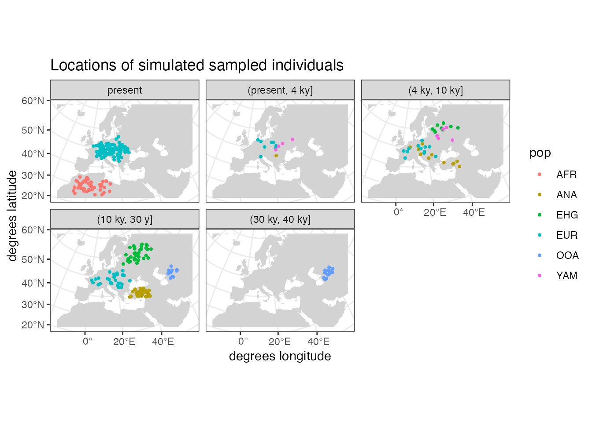
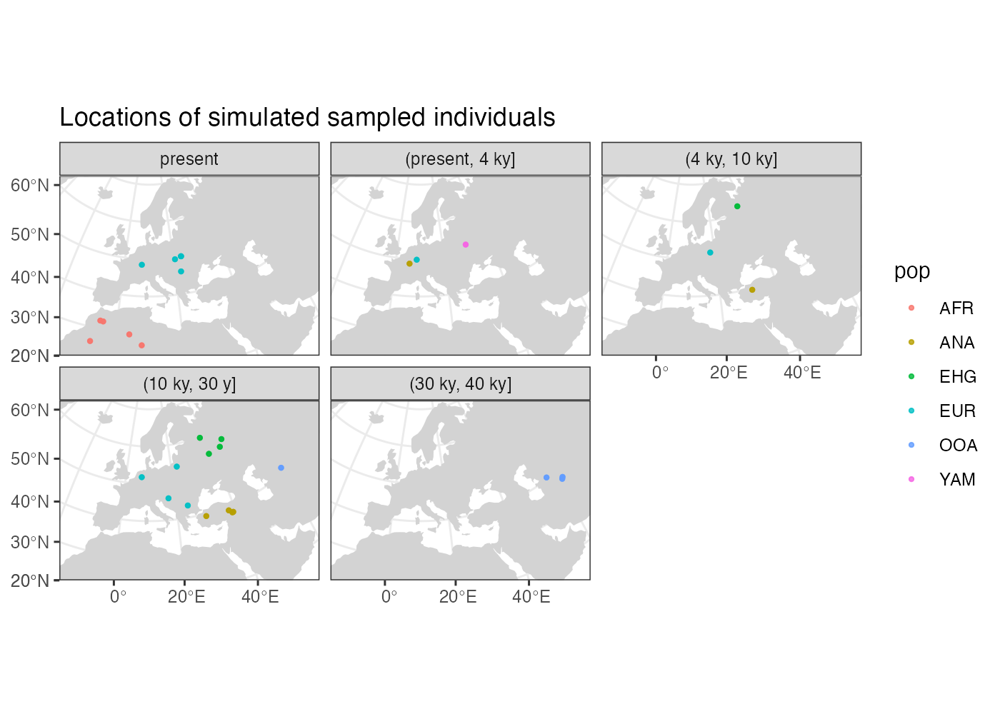

Spatially annotated tree sequences
Source:vignettes/vignette-06-locations.Rmd
vignette-06-locations.RmdNote: This vignette is a work in progress as we are currently figuring out the best way to expose the spatially annotated tree sequence data for analyses and visualization. Please check back regularly to see if this notice has been removed.
Introduction
The main selling point of the slendr R package is programming complex spatial population genetic models. Because we use SLiM as the simulation engine, we can store large amounts of data efficiently in a tree sequence format. In the previous vignettes, we went through how you can specify spatial population dynamics and how you can access tree sequence data and calculate population genetic statistics on it (focusing on non-spatial models for simplicity). Now it’s time to show how to work with and visualize simulated tree sequence data specifically in the spatial context.
Model specification
library(slendr)
library(dplyr)
library(ggplot2)
reticulate::use_virtualenv("~/.pyenv/versions/retipy", required = TRUE)First, let’s program our spatial model. To keep things consistent across our other tutorials, we will use the same demographic model of modern human history in West Eurasia which we extensively discussed in the introductory tutorial. Here is a complete spatial model definition, without further comments:
#
# define the world map
#
map <- world(
xrange = c(-15, 60),
yrange = c(20, 65),
crs = "EPSG:3035"
)#> OGR data source with driver: ESRI Shapefile
#> Source: "/private/var/folders/hr/_t1b0f5n7c76yrfsg8yk9l100000gn/T/RtmpOdNsCt", layer: "ne_110m_land"
#> with 127 features
#> It has 3 fields
#
# define a couple of broad geographic regions
#
africa <- region("Africa", map, polygon = list(c(-18, 20), c(40, 20), c(30, 33),
c(20, 32), c(10, 35), c(-8, 35)))
europe <- region("Europe", map, polygon = list(c(-8, 35), c(-5, 36), c(10, 38),
c(20, 35), c(25, 35), c(33, 45),
c(20, 58), c(-5, 60), c(-15, 50)))
anatolia <- region("Anatolia", map, polygon = list(c(28, 35), c(40, 35), c(42, 40),
c(30, 43), c(27, 40), c(25, 38)))
#
# define population histories
#
afr <- population( # African ancestral population
"AFR", parent = "ancestor", time = 52000, N = 3000,
map = map, polygon = africa
)
ooa <- population( # population of the first migrants out of Africa
"OOA", parent = afr, time = 51000, N = 500, remove = 25000,
center = c(33, 30), radius = 400e3
) %>%
move(
trajectory = list(c(40, 30), c(50, 30), c(60, 40)),
start = 50000, end = 40000, snapshots = 20
)
ehg <- population( # Eastern hunter-gatherers
"EHG", parent = ooa, time = 28000, N = 1000, remove = 6000,
polygon = list(
c(26, 55), c(38, 53), c(48, 53), c(60, 53),
c(60, 60), c(48, 63), c(38, 63), c(26, 60))
)
eur <- population( # European population
name = "EUR", parent = ehg, time = 25000, N = 2000,
polygon = europe
)
ana <- population( # Anatolian farmers
name = "ANA", time = 28000, N = 3000, parent = ooa, remove = 4000,
center = c(34, 38), radius = 500e3, polygon = anatolia
) %>%
expand( # expand the range by 2.500 km
by = 2500e3, start = 10000, end = 7000,
polygon = join(europe, anatolia), snapshots = 20
)
yam <- population( # Yamnaya steppe population
name = "YAM", time = 7000, N = 500, parent = ehg, remove = 2500,
polygon = list(c(26, 50), c(38, 49), c(48, 50),
c(48, 56), c(38, 59), c(26, 56))
) %>%
move(trajectory = list(c(15, 50)), start = 5000, end = 3000, snapshots = 10)
#
# define geneflow events
#
gf <- list(
geneflow(from = ana, to = yam, rate = 0.5, start = 6500, end = 6400, overlap = FALSE),
geneflow(from = ana, to = eur, rate = 0.5, start = 8000, end = 6000),
geneflow(from = yam, to = eur, rate = 0.75, start = 4000, end = 3000)
)
#
# compile the spatial model
#
model <- compile(
populations = list(afr, ooa, ehg, eur, ana, yam),
geneflow = gf,
generation_time = 30, resolution = 10e3,
competition_dist = 130e3, mate_dist = 100e3, dispersal_dist = 70e3,
dir = "~/Desktop/sims", overwrite = TRUE
)Here is a graph summarizing population divergences and geneflow events encoded by the model:
plot_graph(model)
Scheduling sampling events and simulation
Now we will schedule the sampling of one individual from each population every one thousand years, starting from 40 thousand years ago to the present (this is a feature discussed in the basic tree sequence overview):
# one ancient individual every 1 thousand years
ancient <- sampling(model,
times = seq(40000, 1, by = -4000),
list(ooa, 1), list(ehg, 1), list(eur, 1),
list(ana, 1), list(yam, 1))
# 40 present-day Africans, 100 present-day Europeans
present <- sampling(model, times = 0, list(afr, 5), list(eur, 5))
# combine sampling schedules (i.e. data frames) into one
samples <- rbind(ancient, present)
samples#> # A tibble: 24 x 3
#> time pop n
#> <int> <chr> <int>
#> 1 40000 OOA 1
#> 2 36000 OOA 1
#> 3 32000 OOA 1
#> 4 28000 OOA 1
#> 5 24000 EHG 1
#> 6 24000 EUR 1
#> 7 24000 ANA 1
#> 8 20000 EHG 1
#> 9 20000 EUR 1
#> 10 20000 ANA 1
#> # … with 14 more rowsNow we can simulate data. Because we want to explore how to handle spatio-temporal population genomic tree sequence data in slendr, we have to turn on the tree sequence recording (ts_recording = TRUE). We also need to specify the sampling schedule created in the previous chunk (without it, all individuals present at the very end of the simulation would be sampled which is not something we want for this demonstration):
slim(
model, seq_length = 100e3, recomb_rate = 1e-8, burnin = 200e3,
save_locations = TRUE, ts_recording = TRUE, sampling = samples,
method = "batch", seed = 314159, overwrite = TRUE
)After the simulation is done, we can load the data in the same way we did in our first exploration of tree sequence features in ¯slendr. We will also immediately simplify the tree sequence data structure only to genealogies involving individuals that we explicitly scheduled for sampling by adding simplify = TRUE:
ts <- ts_load(model, simplify = TRUE)
ts#> ╔════════════════════════╗
#> ║TreeSequence ║
#> ╠═══════════════╤════════╣
#> ║Trees │ 37║
#> ╟───────────────┼────────╢
#> ║Sequence Length│100000.0║
#> ╟───────────────┼────────╢
#> ║Sample Nodes │ 64║
#> ╟───────────────┼────────╢
#> ║Total Size │60.1 KiB║
#> ╚═══════════════╧════════╝
#> ╔═══════════╤════╤════════╤════════════╗
#> ║Table │Rows│Size │Has Metadata║
#> ╠═══════════╪════╪════════╪════════════╣
#> ║Edges │ 249│ 6.8 KiB│ No║
#> ╟───────────┼────┼────────┼────────────╢
#> ║Individuals│ 124│ 9.2 KiB│ Yes║
#> ╟───────────┼────┼────────┼────────────╢
#> ║Migrations │ 0│ 4 Bytes│ No║
#> ╟───────────┼────┼────────┼────────────╢
#> ║Mutations │ 0│ 1.2 KiB│ No║
#> ╟───────────┼────┼────────┼────────────╢
#> ║Nodes │ 156│ 5.9 KiB│ Yes║
#> ╟───────────┼────┼────────┼────────────╢
#> ║Populations│ 6│ 2.9 KiB│ Yes║
#> ╟───────────┼────┼────────┼────────────╢
#> ║Provenances│ 2│29.8 KiB│ No║
#> ╟───────────┼────┼────────┼────────────╢
#> ║Sites │ 0│ 8 Bytes│ No║
#> ╚═══════════╧════╧════════╧════════════╝Extracting spatial tree sequence data
As we showed in the basic tutorial, the most important function for data exploration is ts_data(). This function extracts all information about individuals and nodes recorded in the tree sequence data for a given tree sequence object loaded and annotated by slendr (saved in the ts object in this example), :
data <- ts_data(ts)
data#> slendr 'spatial' object
#> -----------------------
#> tree-sequence contents:
#> AFR - 5 sampled, 25 retained individuals
#> OOA - 4 sampled, 33 retained individuals
#> EHG - 5 sampled, 11 retained individuals
#> ANA - 6 sampled, 5 retained individuals
#> EUR - 11 sampled, 17 retained individuals
#> YAM - 1 sampled, 1 retained individuals
#>
#> total: 32 sampled, 92 retained individuals and
#> no nodes from an unassigned individual
#>
#> oldest sampled individual: 40000 backward time units
#> youngest sampled individual: 0 backward time units
#>
#> oldest node: 203340 backward time units
#> youngest node: 0 backward time units
#> -----------------------
#> map: internal coordinate reference system EPSG 3035
#> spatial limits (in degrees longitude and latitude):
#> - vertical -15 ... 60
#> - horizontal 20 ... 65For completeness, we have also functions such as ts_individuals(), ts_nodes() and ts_edges() which extract tree sequence tables in their “raw” unprocessed form, but ts_data() is much more convenient for data exploration and analyses. First, it combined information in the low-level tables of individuals and nodes into a single tabular form but more importantly, if the model which generated this data was a spatial model, ts_data() automatically annotates the node/individual tables with the position of each node in space (in real projected coordinates) and time. This means that we can perform spatial data analysis on the table returned by ts_data() directly in the same context we specified the spatial model itself (i.e. on the same map).
Even better, although the returned object belongs to slendr’s own class slendr_spatial, it is internally stored as a spatial sf object. This means that we can use all the functionality of the powerful R package sf as well as many other packages for geospatial analyses directly on the data:
class(data)#> [1] "slendr" "slendr_spatial" "sf" "data.frame"For now, typing the object into the R console presents a user-friendly summary of the spatio-temporal data extracted from the tree sequence:
data#> slendr 'spatial' object
#> -----------------------
#> tree-sequence contents:
#> AFR - 5 sampled, 25 retained individuals
#> OOA - 4 sampled, 33 retained individuals
#> EHG - 5 sampled, 11 retained individuals
#> ANA - 6 sampled, 5 retained individuals
#> EUR - 11 sampled, 17 retained individuals
#> YAM - 1 sampled, 1 retained individuals
#>
#> total: 32 sampled, 92 retained individuals and
#> no nodes from an unassigned individual
#>
#> oldest sampled individual: 40000 backward time units
#> youngest sampled individual: 0 backward time units
#>
#> oldest node: 203340 backward time units
#> youngest node: 0 backward time units
#> -----------------------
#> map: internal coordinate reference system EPSG 3035
#> spatial limits (in degrees longitude and latitude):
#> - vertical -15 ... 60
#> - horizontal 20 ... 65In the first part of the summary, we see how many individuals (sampled or retained) and nodes are present in the tree sequence together with additional useful information. However—and this is a crucial point—we can always access and print the internal sf object by running the following, which strips away the summary printed by slendr and exposes the underlying sf data frame:
data[]#> Simple feature collection with 156 features and 9 fields
#> Geometry type: POINT
#> Dimension: XY
#> Bounding box: xmin: 2364888 ymin: 425675.6 xmax: 8553616 ymax: 4622776
#> Projected CRS: ETRS89-extended / LAEA Europe
#> First 10 features:
#> name pop ind_id node_id time location remembered retained
#> 1 AFR1 AFR 0 44 0 POINT (2950500 1136172) TRUE TRUE
#> 2 AFR1 AFR 0 45 0 POINT (2950500 1136172) TRUE TRUE
#> 3 AFR2 AFR 1 46 0 POINT (4097195 425675.6) TRUE TRUE
#> 4 AFR2 AFR 1 47 0 POINT (4097195 425675.6) TRUE TRUE
#> 5 AFR3 AFR 2 48 0 POINT (2866825 1161716) TRUE TRUE
#> 6 AFR3 AFR 2 49 0 POINT (2866825 1161716) TRUE TRUE
#> 7 AFR4 AFR 3 50 0 POINT (2559993 553368.1) TRUE TRUE
#> 8 AFR4 AFR 3 51 0 POINT (2559993 553368.1) TRUE TRUE
#> 9 AFR5 AFR 4 52 0 POINT (3727605 750357.7) TRUE TRUE
#> 10 AFR5 AFR 4 53 0 POINT (3727605 750357.7) TRUE TRUE
#> alive pedigree_id
#> 1 TRUE 31378821
#> 2 TRUE 31378821
#> 3 TRUE 31379136
#> 4 TRUE 31379136
#> 5 TRUE 31379275
#> 6 TRUE 31379275
#> 7 TRUE 31379482
#> 8 TRUE 31379482
#> 9 TRUE 31380423
#> 10 TRUE 31380423At this point, it is important to note that if a slendr model which generated the tree sequence was encoded in a projected Coordinate Reference System (as opposed to non-spatial models), ts_data() automatically transforms locations from pixel-based raster coordinates used internally by SLiM (stored as raster_x and raster_y columns in data returned by the ts_individuals() function) into that projected CRS.
Because the data returned by ts_data() is internally transformed to the projected CRS used by the model, we can use the returned object as any other data of the class sf. For instance, at the beginning of this vignette, we specified the world map of the model to be represented in projected CRS (EPSG 3035) which we can verify by typing:
map#> slendr 'map' object
#> -------------------
#> map: internal coordinate reference system EPSG 3035
#> spatial limits (in degrees longitude and latitude):
#> - vertical -15 ... 60
#> - horizontal 20 ... 65The fact that the ts_data() result is just another sf object makes it easy to visualize its contents on this map, as we will see below.
Using the simple features interface
It’s hard to overstate how powerful the library for manipulating simple features of the class sf is. However, it is a little challenging to really see and appreciate this power at first, especially for novice spatial data analysts because the field of spatial data analysis is quite challenging to get into in the first places (mostly because many obscure new concepts and names such as “projected” vs “geographic” Coordinate Reference Systems, transformations between them, their interaction with the ggplot2 library for plotting, etc.).
Although many slendr features for encoding and programming spatial models and handling simulated tree sequence data discussed so far are designed to abstract away most of the complexities of the underlying low-level details to let you focus on the problem at hand, spatial data analysis is unfortunately whole another matter. Luckily, because the spatial data generated by slendr is no different from any other source of spatial data out there and you have tremendous free resources at your disposal.
The bottom line is: the spatio-temporal data extracted from tree sequences by the ts_data() function is nothing else than an any other normal sf object. Any resource that you find for manipulating, plotting, and analysing sf data can be applied here as well.
In the remainder of this vignette we will look at a couple of examples which will make this clear.
Plotting locations of simulated sampled individuals
Recall that our own function plot.slendr allows plotting any slendr object on a world map. For instance, we can plot the world map itself simply by calling:
plot(map)
Internally, this function is implemented using ggplot2 and the geom_sf() function for plotting sf spatial features. This means that it simply returns a ggplot object, which is automatically displayed on evaluation:
plot(map) %>% class#> [1] "gg" "ggplot"The consequence of the power of ggplot2 and sf is that we can overlay other sf object on top of this map—including the spatial data generated by the ts_data() function (here we only plot the explicitly sampled individuals)!
sampled_data <- ts_data(ts, remembered = TRUE)
plot(map) +
geom_sf(data = sampled_data, aes(color = pop)) +
ggtitle("Locations of simulated sampled individuals")#> Coordinate system already present. Adding new coordinate system, which will replace the existing one.
Because checking the position of simulated individuals is something we need to do relatively often during an interactive data exploration, slendr provides a shortcut in form of the function plot_locations():
plot_locations(sampled_data)
The function has several optional arguments that help to narrow down potentially large data sets to only the samples or nodes of interest. For instance, this is how we would show the locations of only Anatolian simulated individuals who are between 152 and 5 thousand years (ky) old:
plot_locations(data, pop = "ANA", younger_than = 15000, older_than = 5000)
Note: It is impossible to capture every possible figure one might want to create when analysing complex spatio-temporal data such as spatially-explicit tree sequences discussed in this vignette. The function plot_locations() (as well as other slendr tree sequence plotting functionality shown below) serves only for quick interactive exploratory analyses. For generating custom publication-level figures we encourage you to utilize the powerful ggplo2 interface for visualising sf objects. This is why we are showing more verbose examples demonstrating how to replicate figures created by built in slendr functions “manually”. There is no blackblox and these plotting functions really are wrapping very simple ggplot2 code to avoid repeated typing of the same plotting commands over and over in the interactive console.
Because sf simple features objects (and, by extension, even slendr_spatial objects) are internally stored as normal data frames with couple more bells and whistles on top of them, we have all the powerful tools for manipulating tabular data at our disposal.
As an example, let’s say we wanted to split the sampled individuals in the tree sequence into epochs and plot those individually using standard ggplot2 features. We could simply first do this, adding a new column specifying to which epoch does each simulated individual belong:
epochs <- sampled_data %>%
mutate(epoch = cut(time, breaks = c(40000, 30000, 10000, 4000, 0)),
epoch = ifelse(is.na(epoch), 0, epoch),
epoch = factor(epoch, labels = c("present", "(present, 4 ky]", "(4 ky, 10 ky]",
"(10 ky, 30 y]", "(30 ky, 40 ky]")))This chunk of code simply adds a new column epoch to the sf spatial data frame object called epochs here.
Then we can use the ggplot2 function geom_sf to plot the locations of sampled individuals on the map, with each facet corresponding to one epoch (the warning can be safely ignored):
plot(model$world) +
geom_sf(data = epochs, aes(color = pop), size = 0.75) +
facet_wrap(~ epoch) +
ggtitle("Locations of simulated sampled individuals")#> Coordinate system already present. Adding new coordinate system, which will replace the existing one.
We mentioned that the slendr function plot.slendr() is implemented using ggplot2 and sf R packages. The implementation of the function is rather complex because it is a generic function designed to take various sorts of input data (remember that you can use it to plot the world map, slendr regions, and populations themselves). However, to make everything clear and to convince you how simple manipulating sf objects is with ggplot2, here is how you could create the previous plot without using any slendr plotting functionality at all:
ggplot() +
geom_sf(data = map, fill = "lightgray", color = NA) + # plot the map first
geom_sf(data = epochs, aes(color = pop), size = 0.75, alpha = 0.8) + # plot locations of individuals
coord_sf(expand = 0) + # fill in the map features to the edges
facet_wrap(~ epoch) +
ggtitle("Locations of simulated sampled individuals") +
theme_bw()
We hope this convinced you that although it is impossible for us to create a dedicated function for every type of figure you might want to create for your study, you can easily use your knowledge of ggplot2 to make any figure imaginable.
Extracting spatio-temporal ancestral relationships
Perhaps even more useful than plotting the locations of individuals is accessing the locations (and times) of all ancestors of a particular node (which we call a “focal node”) in a tree sequence. Starting from the focal node or individual, we can trace the geographical location of nodes in its lineage going back all the way to the rood with the function ts_ancestors().
The simplest use case is determining the locations and times of every single node in the genealogical history along the tree sequence for a given individual (it is possible to recover ancestral relationships for multiple samples at once too):
ind <- "EUR10"
lineages <- ts_ancestors(ts, ind)The function starts at a given node (or, if a name of a sampled diploid individual is provided, two nodes), extracts information about all the parent nodes of that node in the entire tree sequence, records their locations and times, then proceeds one level “higher” in the coalescent history at the parents of those parent nodes, etc., until it reaches a root node (which doesn’t have a parent). The result of this process is another sf object in which each row of the table encodes information about single branch of the tree sequence:
lineages#> Simple feature collection with 100 features and 12 fields
#> Active geometry column: connection
#> Geometry type: LINESTRING
#> Dimension: XY
#> Bounding box: xmin: 3124509 ymin: 564625.1 xmax: 8483538 ymax: 4610242
#> Projected CRS: ETRS89-extended / LAEA Europe
#> # A tibble: 100 x 15
#> name pop ind_id focal_id node_id time location level
#> * <chr> <chr> <dbl> <int> <int> <int> <POINT [m]> <fct>
#> 1 EUR10 EUR 8 60 60 0 (4101241 2823061) 1
#> 2 EUR10 EUR 8 60 60 0 (4101241 2823061) 1
#> 3 EUR10 EUR 8 60 60 0 (4101241 2823061) 1
#> 4 <NA> EUR 108 60 73 9210 (5334939 2989500) 2
#> 5 <NA> ANA 107 60 74 9300 (5608048 2328639) 2
#> 6 <NA> EUR 78 60 94 23400 (5316194 3031640) 2
#> 7 <NA> EUR 104 60 76 11820 (5278469 2668747) 3
#> 8 <NA> EUR 104 60 76 11820 (5278469 2668747) 3
#> 9 <NA> EUR 104 60 76 11820 (5278469 2668747) 3
#> 10 <NA> ANA 106 60 75 9390 (5652621 2155983) 3
#> # … with 90 more rows, and 7 more variables: parent_id <int>, parent_pop <chr>,
#> # parent_time <int>, parent_location <POINT [m]>,
#> # connection <LINESTRING [m]>, left_pos <dbl>, right_pos <dbl>In each row of the table, two columns location and parent_location carry the spatial location of a node (node_id) and its parent node (parent_id), respectively, same with the columns time and parent_time (times of nodes) and pop and parent_pop (populations to which the nodes belong). The column connection contains an sf geometry object of the line connecting the two nodes in the coordinate reference system of the “model world”. The column focal_id tells us to which focal node’s genealogy the rows of the table belong to, and the level column shows how deep in the genealogical past does each branch (i.e. row of the table) belong to.
This table contains a complete information about spatio-temporal relationships between the nodes in the genealogy of the given focal sample. In the spirit of demonstrating of slendr tree sequence tables interact with the sf and ggplot2 environments, let’s look at the most immediate parent nodes of the two nodes in the sampled individual EUR10 (i.e. nodes at the level 1):
filter(lineages, name == ind, level == 1)#> Simple feature collection with 4 features and 12 fields
#> Active geometry column: connection
#> Geometry type: LINESTRING
#> Dimension: XY
#> Bounding box: xmin: 4101241 ymin: 2328639 xmax: 5608048 ymax: 3178496
#> Projected CRS: ETRS89-extended / LAEA Europe
#> # A tibble: 4 x 15
#> name pop ind_id focal_id node_id time location level
#> * <chr> <chr> <dbl> <int> <int> <int> <POINT [m]> <fct>
#> 1 EUR10 EUR 8 60 60 0 (4101241 2823061) 1
#> 2 EUR10 EUR 8 60 60 0 (4101241 2823061) 1
#> 3 EUR10 EUR 8 60 60 0 (4101241 2823061) 1
#> 4 EUR10 EUR 8 61 61 0 (4101241 2823061) 1
#> # … with 7 more variables: parent_id <int>, parent_pop <chr>,
#> # parent_time <int>, parent_location <POINT [m]>,
#> # connection <LINESTRING [m]>, left_pos <dbl>, right_pos <dbl>We can see that the individual EUR10 has 4 different parent nodes in the tree sequence—3 ancestors of the first chromosome/node, 1 ancestors of the second node.
As we mentioned above, there are three columns encoding spatial information: location and parent_location carry information about the location of the child and parent node (POINT class), and the connection object (LINESTRING class) contains the line connecting the two nodes (both a branch in the tree sequence and also the spatial connection). We can plot all three spatial features (two points and a line) individually on a map:
level1_branches <- ts_ancestors(ts, "EUR10") %>% filter(level == 1)
ggplot() +
geom_sf(data = map) +
geom_sf(data = level1_branches[, ]$location, shape = 13, size = 3, color = "red") +
geom_sf(data = level1_branches[, ]$parent_location, shape = 20, color = level1_branches[, ]$focal_id) +
geom_sf(data = level1_branches[, ]$connection, linetype = 3)
In the figure above we can see the red focal node and 4 of its immediate parents in the tree sequence genealogy (in the coalescent sense, not immediate parents of that individual!).
A more convenient way to do this is a companion function to ts_ancestors() called plot_ancestors(). This function accepts an sf object with the spatial branching information created by ts_ancestors() and plots the paths between nodes on a map for all nodes leading from a focal node up to the root of the sequence of genealogies (instead of just paths to immediate parents shown in the previous figure). In this case, because we are working with a single diploid individual, we get two sets of paths for each of its nodes (chromosomes):
plot_ancestors(lineages, ind)
We can immediately notice several things:
All the spatial tree sequence paths trace the ancestry of our single European individual back to African. In fact, we can also see a “clump” of past ancestors in the location where our simulated Out of Africa (OOA) migrant population settled around 40,000 thousand years ago.
First node (i.e. chromosome) 60 of the individual in the left panel traces part of its ancestry to the EHG population (the “filled square” node in the north) and part to the Anatolia (triangles). This makes sense, because we have simulated European ancestry as being part Anatolian. The second chromosome (node 61) only traces its ancestry to Yamnaya signified by “star nodes”. Again, this is expected because we programmed Yamnaya to contribute significant part of ancestry to present-day Europeans. In turn, the Yamnaya node traces its ancestry to EHG (which is its parental population, as you can see in the demographic graph on top of this vignette).
All Eurpean genealogies coalesce somewhere in Middle-East between 50-40 thousand years ago. This is because we have deliberately simulated the OOA population to have extremely low population size. In contrast, there is much more variation in the ancestral African population, because it was much larger throughout it was much larger.
By default, branches are colored by the time of coalescence. We can also plot the number of coalescent events separating a focal node (red crossed circle) and one of its ancestors by specifying color = "level" (where level 1 represents branches leading to all of the focal node’s parents):
plot_ancestors(lineages, ind, color = "level")